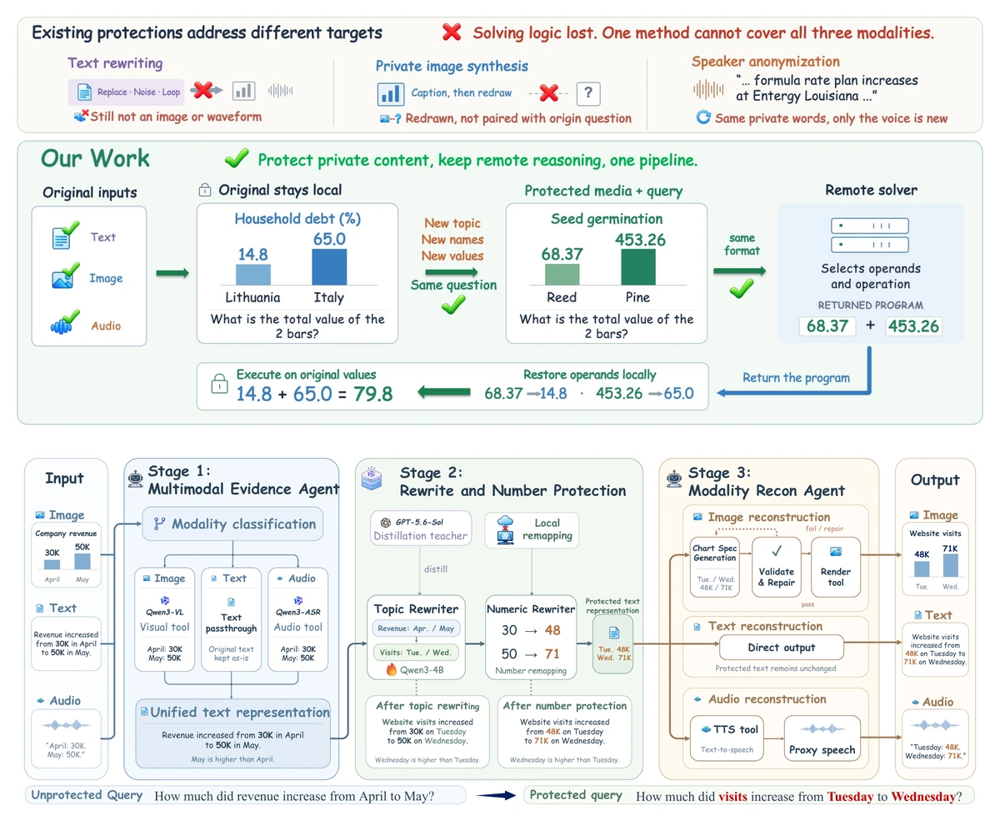

ReCast: Contract-Preserving Protection for Fixed-Interface Multimodal Reasoning
Protecting private image, audio, and text inputs while preserving task structure and modality-specific interfaces for remote multimodal reasoning.
Welcome! I am a second-year undergraduate student at Beijing Jiaotong University. My research interests span natural language processing, LLM agents, retrieval-augmented generation, and trustworthy multimodal AI, with a particular focus on privacy and security.
I am currently working on privacy in multimodal AI systems, with a focus on privacy-preserving multimodal interaction and reasoning. I am also exploring AI for Software Engineering (AI4SE) and LLM Agents & Multi-Agent Collaboration.
Research
† equal contribution ‡ project lead * corresponding author

Protecting private image, audio, and text inputs while preserving task structure and modality-specific interfaces for remote multimodal reasoning.
Selected work
Research & Engineering
Intelligent Campus Learning and Life Assistant
Campus-Mind is an intelligent assistant for the Beijing Jiaotong University. It brings together campus information Q&A, personalized academic analysis, English-learning support, project workspaces, and long-term memory in one system.
Internal beta testing is planned for summer 2026, with campus deployment targeted for September 2026.
Recognition
Third Prize, Beijing Jiaotong University Collegiate Programming Contest
Third Prize, Beijing Jiaotong University Freshman Programming Contest
Background
Undergraduate
B.S. in Computer Science and Technology · Expected 2029